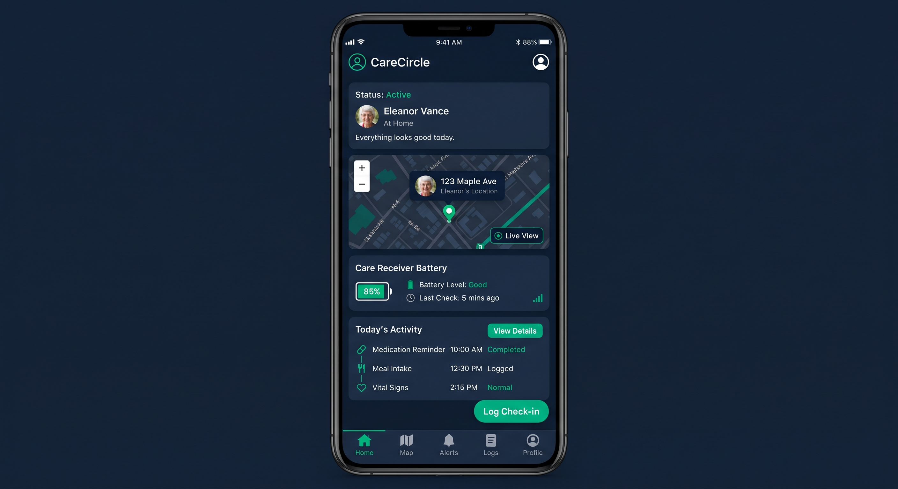

"Volver a pasar por el corazón": Ecosistema de asistencia pasiva sin fricción que combina auto-anclas grabadas en fase temprana, captura pasiva Zero-Touch y geolocalización segura de rescate.
Three Pillars of Care & Preservation
Diseñado bajo el principio de fricción cero para el paciente y tranquilidad absoluta para la familia.
El paciente no opera ningún botón. Captura manos libres automatizada mediante wearables livianos con sincronización autónoma en base de carga.
Cero fricción cognitivaCifrado local inmediato AES-256 con borrado físico automático (Auto-Wipe). Almacenamiento seguro en la nube bajo estándares HIPAA/GDPR.
Cifrado de extremo a extremoIndexación con IA multimodal de recuerdos vitales e integración de auto-mensajes grabados en fases tempranas para reorientación afectiva.
Reorientación emocional activaGrabación guiada en fases lúcidas para crear intervenciones de voz y vídeo que el propio paciente escucha en momentos de agitación o desorientación futura.
"Hola, soy yo, Manuel. Son las 9 de la mañana. Recuerda tomar la pastilla azul sobre la mesa para estar tranquilo."
Disparado por: Programador horario pasivo"No te asustes si te sientes desorientado. Estás en tu casa de la Calle Mayor. Marta está en camino y todo está bien."
Disparado por: Sensor de movimiento nocturno de la pulsera"Hoy es un día estupendo para caminar por el parque. Ponte las zapatillas verdes, recuerdas cuánto te gusta ese paseo."
Disparado por: Inactividad matutina detectadaRespuestas graduadas que evolucionan automáticamente con la progresión del deterioro cognitivo del paciente.
| Fase Cognitiva | Maniobrabilidad Real | Interacción con la App / Wearable | Rol del Cuidador |
|---|---|---|---|
| Fase Leve (GDS 3) | Asistida (Botonera simple) | Grabación guiada de Auto-Anclas y activación por voz en un toque. | Supervisión y co-configuración de rutinas. |
| Fase Moderada (GDS 4-5) | NULA (100% Pasiva) | Sincronización autónoma en base de carga. Cero interacción táctil requerida. | Operador único de la Gateway App y monitorización de alertas. |
| Fase Avanzada (GDS 6-7) | Sensorial / Híper-ligera | Geolocalización por pulsera hipoalergénica sin botones y rescate QR pasivo. | Recuperación de historiales y supervisión de seguridad activa. |
Una matriz completa de funciones de seguridad pasiva y activa diseñada para la tranquilidad absoluta de la familia y la autonomía protegida del paciente.
Detectar de forma inmediata desplazamientos fuera del horario habitual de descanso para prevenir riesgos en la calle.
Aviso automatizado anticipado al cuidador cuando la pulsera necesita cargarse, garantizando autonomía continua.
Alertar de inmediato ante periodos inusuales de inactividad o posibles caídas dentro o fuera del hogar.
Capacidad de avisar simultáneamente a varios familiares y contactos de confianza con un solo toque o comando.
Consultar desplazamientos anteriores y patrones de ruta habituales para una mejor supervisión médica.
Alerta instantánea al cuidador si la persona se quita la pulsera de la muñeca de forma voluntaria o accidental.

Figura 1: Diseño de la pulsera inteligente con geolocalización GPS y código QR de emergencia.

Figura 2: Matriz de funciones activas de protección y supervisión continua.
Interfaces de Usuario y Arquitectura de Producto
Visualización de las pantallas desarrolladas para la supervisión del cuidador y la exploración del legado.

Figura 3: Interfaz móvil del cuidador bajo la paleta de cero fatiga visual (Modo Oscuro & Esmeralda).
Arquitectura de Conocimiento Cero (Zero-Knowledge) diseñada para cumplir con los más altos estándares regulatorios médicos (HIPAA / GDPR).
Los flujos de vídeo POV y datos biométricos se cifran localmente en el dispositivo mediante AES-256 antes de transmitirse. Se transportan vía TLS 1.3 y se almacenan en clústeres aislados europeos bajo claves controladas por el usuario (CMEK).
El código QR de la pulsera contiene un UUID aleatorio que no expone datos personales. Al escanearse, genera una sesión efímera que muestra exclusivamente el vídeo de identidad y un canal seguro de contacto.
Preparado para la firma de acuerdos BAA (HIPAA) y cumplimiento nativo del GDPR europeo (incluyendo el derecho al olvido automatizado y aislamiento total de modelos de IA).
¿Eres investigador en IA, líder de producto en HealthTech o inversor interesado en soluciones de asistencia cognitiva? Estamos abriendo vías de validación y colaboración tecnológica de alto nivel.